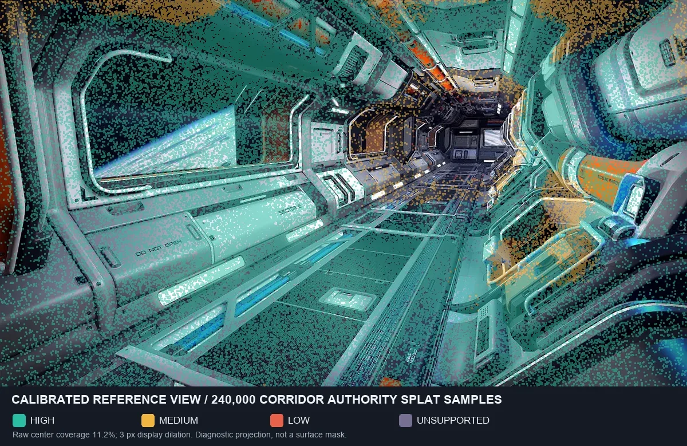
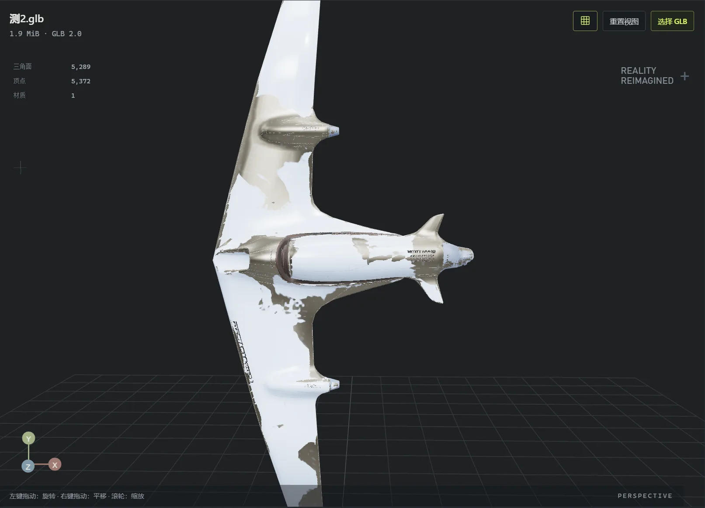
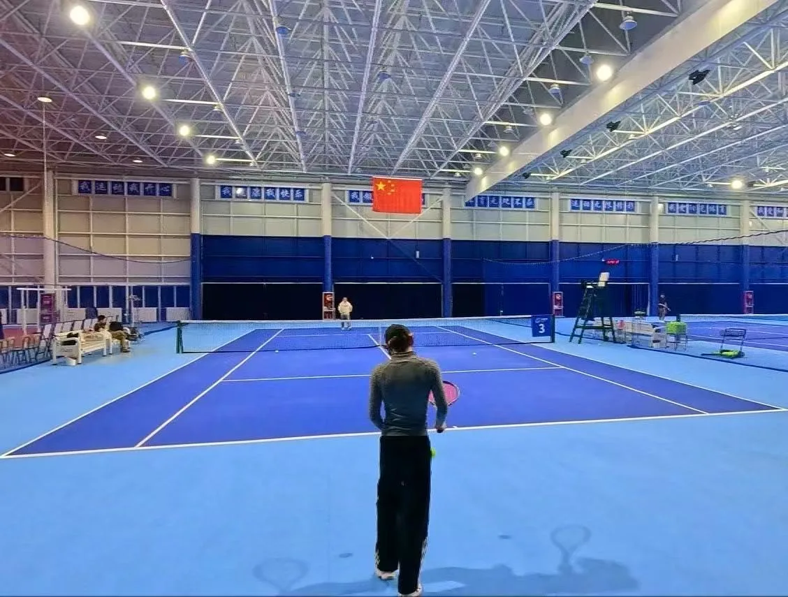
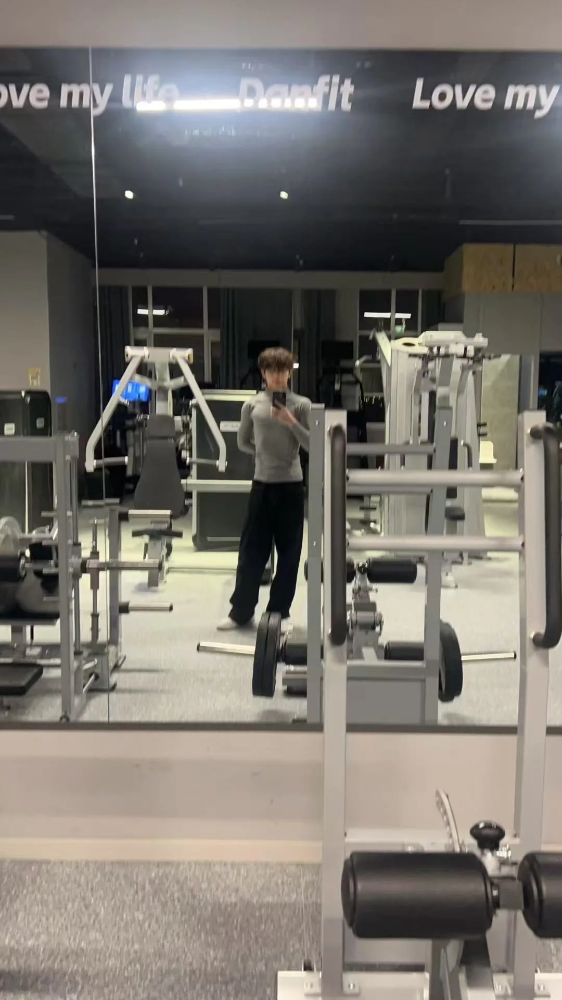

Let the holes stay holes.
What was observed, what was inferred and what is missing are recorded as three different things.
MA portfolio 2027
Artificial Intelligence & Digital Art
Fig. 00 — Interactive sketch. A procedural point cloud of a room; the lens compiles uncertain points into labelled structure. Illustrative, not project data.
Kian Kang is an artist and technical artist working between world models, generative 3D and real-time engines — building tools and experiments for the gap between what an AI imagines and what a person can enter, edit and trust.
Generative models are very good at suggesting worlds. They are much worse at saying where anything is, what was actually observed, and what was only made up to look right. I treat that gap as my material: I keep the unknown visible, give every decision an author, and build tools in which the artist — not the model — has the last word.
What was observed, what was inferred and what is missing are recorded as three different things.
Each system is trusted only for what it can actually establish. Appearance never decides placement.
A local artistic decision has to remain the artist’s after the mesh, the UVs or the model have changed.

02 MATE A desktop tool that keeps materials editable after generation: reviewable AI proposals, real model targets and an effect stack the artist controls.
02b MATE — research paperPaper A pilot study on carrying one artistic edit across 3D asset regeneration. Full text, with two interactive figures. 03
AI Pilgrim
A sacred science-fiction world taken from concept images to modular assets, Blender repair and real-time scenes in Unreal Engine 5.
03
AI Pilgrim
A sacred science-fiction world taken from concept images to modular assets, Blender repair and real-time scenes in Unreal Engine 5.
 04
Pachinko ParlorPlayable
One layout file — rendered, simulated and played. A scripted scene directed through an AI coding agent, with its failures left on the record.
04
Pachinko ParlorPlayable
One layout file — rendered, simulated and played. A scripted scene directed through an AI coding agent, with its failures left on the record.
 05
Archive Terminal 07
A robot archivist you can walk up to and talk with — an Unreal Engine conversation prototype backed by a language model.
05
Archive Terminal 07
A robot archivist you can walk up to and talk with — an Unreal Engine conversation prototype backed by a language model.

Across the projects I use one working rule: a pipeline becomes reliable when each part is responsible only for what it can actually establish. The table is a responsibility model I design towards — not a claim that every stage is finished.
Semantics, object relationships and rough spatial hypotheses.
Exact position, metric scale or production geometry.
Evidence of what was seen: splats, camera cues, source-space observations.
A trustworthy, production-ready mesh.
Candidate geometry and appearance for one object.
Where that object belongs in the world.
Accepted decisions, with provenance, confidence and state.
Missing evidence. Recording a decision does not make it true.
Deterministic execution of what has been accepted.
Unknown spatial facts or absent constraints.
Intent, review and the acceptance decision.
Nothing here is decided without one.
I study Creative Space at Sichuan Fine Arts Institute, where spatial design meets digital art and real-time 3D. I came to AI in 2023 as an image-maker, and stayed for a harder question: what does it take for a generated world to hold together?
Since August 2026 I have worked with NetEase Games’ ArtSpark team as a Technical Art / AI Pipeline intern — on a multimodal AI workflow canvas, ComfyUI image workflows, Unreal Editor Python tools, and capture pipelines for 3D Gaussian Splatting tests.
My own projects are built with AI coding agents as collaborators. I set the direction and constraints, test against real assets and decide what is accepted — and I try to say plainly which part is which. These are hands-on tools and experiments, not a claim to train foundation models.

